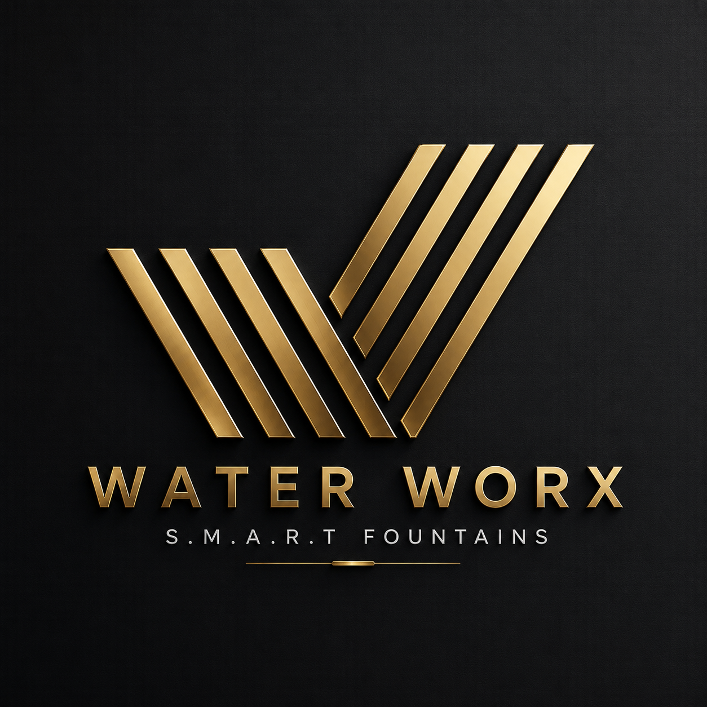

Touch your S.M.A.R.T Panel in Second Life and accept the prompt to open this page. That generates a session link tied to your panel.
Session links expire after 12 hours. Touch the panel again for a new one.